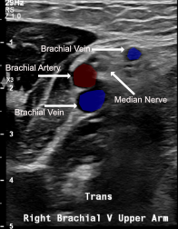
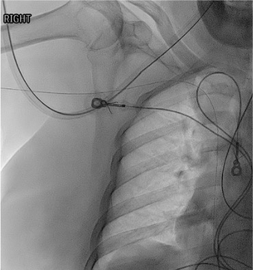
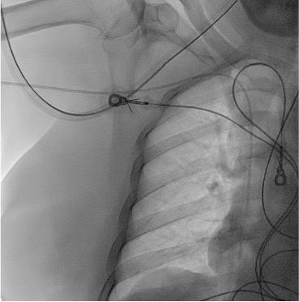

Indications / Contraindications
Indications
- Long-term IV access (>5 days) for antibiotics, chemotherapy, TPN, vesicant medications
- Poor peripheral venous access — failed peripheral IV attempts
- Frequent blood draws requiring central access
- Medications incompatible with peripheral infusion (osmolarity >900 mOsm/L, pH <5 or >9, vesicants)
- Bridge to tunneled catheter or port
Contraindications
- Absolute: Ipsilateral upper extremity DVT · AV fistula on ipsilateral arm (NEVER) · Ipsilateral mastectomy with axillary node dissection (lymphedema risk)
- Relative: Overlying infection at access site · Prior PICC same arm (choose opposite arm to reduce DVT risk) · Arm lymphedema · Severe bilateral arm pathology (consider femoral PICC)
- Note: If patient is a potential future dialysis patient — strongly consider tunneled catheter instead to preserve veins
Pre-Procedure Checklist
Relevant Anatomy
Vessel Hierarchy (best to avoid)
- Basilic vein — PREFERRED: Largest diameter, no major adjacent artery, medial aspect of upper arm, direct route to axillary → subclavian → SVC; mid-upper arm diameter typically 4–6 mm
- Brachial veins — Second choice: Paired veins adjacent to brachial artery (medial to lateral: brachial artery + median nerve); depth requires US guidance; risk of arterial puncture; use color Doppler to differentiate
- Cephalic vein — Third choice: Lateral upper arm, more superficial, but tortuous angle at deltopectoral groove ("cephalic arch") where it enters axillary vein at acute angle — causing resistance and malposition or failure to advance

Access Site & Tip Position
- Access site: Mid-upper arm (middle third) preferred — avoids kinking at antecubital fossa, reduces phlebitis, avoids axillary infection risk from armpit
- Target tip position: Lower 1/3 SVC / cavoatrial junction
- Right-sided PICC: Tip at level of tracheal bifurcation (carina) on CXR
- Left-sided PICC: Must be advanced 1–2 cm deeper than right-sided (longer path through innominate vein before descending to SVC)
Key Anatomic Relationships
- Brachial neurovascular bundle: brachial artery + paired brachial veins + median nerve — confirm vessel identity with color Doppler before access
- Cephalic arch: acute angulation as cephalic vein joins axillary vein at deltopectoral groove — most common cause of failure to advance or malposition via cephalic approach
- Left innominate vein crosses midline horizontally before joining right innominate to form SVC — left-sided PICCs must traverse this longer course
How I Do It
Default RadCall approach + community cards
Supplies
Steps
Arm selection
Room setup
Vessel assessment
Sterile prep
US-guided venipuncture
Guidewire insertion

Skin nick and peel-away sheath placement
PICC insertion
Fixation and dressing

Troubleshooting
Cannot advance wire / resistance at shoulder
Cause: Cephalic arch angulation, subclavian kink, or tortuous axillary vein.
Fix: Have patient take deep breath; lower ipsilateral shoulder; try turning head to insertion side; withdraw to mid-subclavian and try different wire angle; if cephalic vein — switch to basilic.
Wire migrates into jugular vein (neck migration)
Cause: Common — wire follows path of least resistance into IJ.
Fix: Under fluoro, withdraw wire to subclavian; tilt patient's head toward insertion side (collapses ipsilateral IJ); re-advance. Can also compress ipsilateral IJ externally at neck.
Arrhythmia during wire passage
Cause: Wire tip in RA or RV.
Fix: Pull wire back 2–3 cm under fluoroscopy until arrhythmia stops; confirm tip in low SVC.
Tip in azygos vein
Cause: Wire/catheter angled posteriorly in SVC.
Fix: Withdraw to SVC, rotate catheter anteriorly, re-advance.
Arterial puncture (bright red pulsatile blood)
Cause: Brachial artery puncture — most common with brachial vein approach.
Fix: Remove needle immediately; hold firm pressure for minimum 5 minutes; do NOT advance wire if artery entered. Reassess with US after hemostasis.
Complications
Immediate
- Arterial puncture (<2%) — brachial artery most common with brachial approach; direct pressure
- Nerve injury — median nerve adjacent to brachial veins; paresthesias during access → reposition
- Malposition (~10%) — jugular, axillary, azygos; detected on CXR; reposition over wire
- Air embolism (<1%) — keep catheter hubs capped; treat with left lateral decubitus + Trendelenburg
Delayed
- Catheter occlusion (~30%) — most common complication; tPA (alteplase 2mg/2mL) dwell for 2h to clear fibrin; pulsatile flushing after each use prevents
- DVT (~5%) — risk increased with: prior PICC same arm, small vessel, large catheter, cephalic vein, previous thrombosis; treat with anticoagulation ± catheter removal
- CLABSI (~2/1000 catheter-days) — maximal sterile barrier during insertion critical; hub-based infection most common source post-insertion
- Catheter migration/malposition — arm movement can shift tip; check CXR if concern; reposition under fluoro
- Phlebitis — usually superficial, not septic; warm compresses; consider catheter removal if persists
Post-Procedure Care
Immediate (same day)
- Confirm catheter tip on fluoroscopy prior to use. Right-sided: cavoatrial junction. Left-sided: lower SVC / cavoatrial junction (1–2 cm deeper than right).
- Secure catheter: StatLock anchored to skin. Transparent dressing changed q7d or when soiled. Date catheter
- Document: Insertion date, French size, number of lumens, tip position on CXR, arm and vein used, insertion length (at skin vs. from puncture site)
Ongoing Care
- Daily assessment: Inspect exit site, dressing integrity, line connections. Assess for erythema, swelling, tenderness, leakage
- Flushing protocol: Flush each lumen with 10 mL NS before/after use. After blood draws, TPN, or thick infusions: flush 20 mL NS. Positive pressure locking with 3–5 mL heparinized saline (10 units/mL) to prevent occlusion
- Dressing change: q7d or whenever wet/soiled/loose. Chlorhexidine swab for skin antisepsis. Allow to dry fully before applying new dressing
- Assess daily for need — remove PICC as soon as IV access no longer required
Critical Pearls
PICC Maintenance
Occlusion Management
- Inability to aspirate or infuse → confirm no kink/external compression first (CXR/arm inspection)
- tPA (alteplase) 2 mg/2 mL: Instill to fill lumen volume, dwell 30–60 min, aspirate; second dose if no return after first dwell
- Catheter pinch-off syndrome: Compression between clavicle and first rib (cephalic/subclavian approach); position-dependent symptoms; requires replacement if severe
- Fibrin sheath: Most common cause of late occlusion; consider exchange if tPA fails
DVT Management
- Symptomatic upper extremity DVT: Treat with anticoagulation (therapeutic LMWH or DOAC) × minimum 3 months
- If catheter still needed and functional: Can continue PICC with anticoagulation
- If catheter no longer needed: Remove after initiating anticoagulation — removing active DVT source is important
- Catheter-associated DVT without symptoms: anticoagulation recommended per SIR/ACR guidelines
CLABSI Management
- Fever + no other source in patient with PICC → blood cultures: draw from PICC AND peripherally
- Differential time to positivity (DTP) >2h favors catheter source
- Treat with appropriate antibiotics; remove PICC if: Staphylococcus aureus, fungal infection, or no clinical improvement at 72h